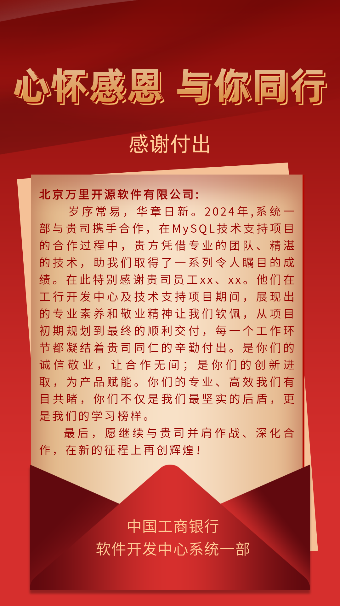
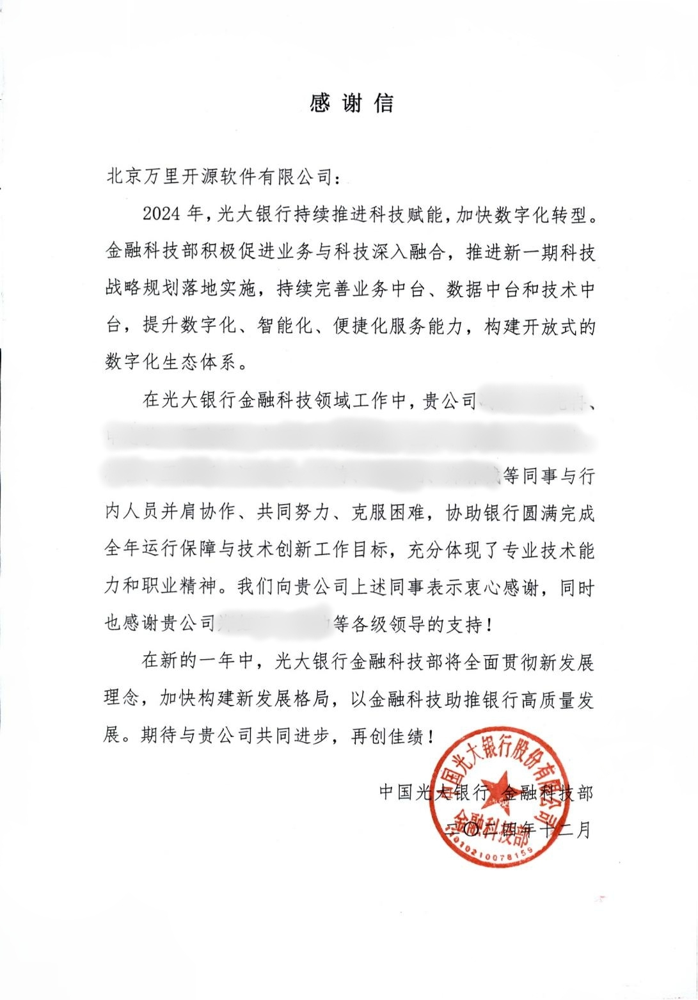

荣誉 | 银行客户赞誉满分！万里数据库接连收获工商银行、光大银行感谢信
万里数据库深耕金融行业多年
服务工商银行、建设银行、光大银行、中信建投、
城市商业银行等多个金融细分领域客户
不仅积累了丰富的项目实践经验
更收获了客户发自内心的认可与行业口碑
近日、工商银行、光大银行
接连向万里数据库发出感谢信
在对公司项目团队的
专业能力与敬业精神表示认可外
更表达了与公司长期深化合作
共同发展的期待与信心
01、工商银行：并肩作战 深化合作
万里数据库凭借专业的团队、精湛的技术，帮助工行开发中心及技术支持项目完成了从项目初期规划到交付
的每一环节工作。
工商银行对万里数据库的专业素养和敬业精神感到钦佩，愿继续与我们并肩作战、深化合作，在新的征程上
再创辉煌！

02、光大银行：共同进步 再创佳绩
2024年，光大银行持续推进科技赋能，加快数字化转型，促进业务与科技深入融合，持续完善业务中台、数据
中台和技术中台，提升数字化、智能化、便捷化服务能力。
万里数据库与光大银行并肩协作、共同努力、克服困难，协助银行圆满完成全年运行保障与技术创新工作目标，
充分体现了专业技术能力和职业精神。
光大银行希望在新的一年中，与万里数据库共同进步、再创佳绩，以金融科技助推银行高质量发展。

征程万里风正劲，重任千钧再奋蹄。
推动银行高质量发展
万里数据库
期待与用户再创佳绩、共赢美好未来！